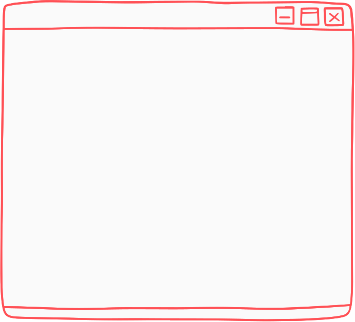

About

- 자기 일을 스스로 재미있게 만드는 사람
- 눈앞의 일을 하면서도 10년 후를 내다보는 사람
- 개인보다 팀에서 의미를 찾는 사람
- 국적, 나이, 직급에 얽매이지 않는 사람
- 알고 있는 것과 할 수 있는 것의 차이를 아는 사람
- 구체적으로 생각, 행동, 문제를 해결하는 사람
- 다양한 실패 경험을 가진 사람
- 꾸준함과 지루한 일의 힘을 아는 사람
- 항상 자기를 업데이트 하는 사람
- 돈보다 중요한 것을 가진 사람
- 함께 일하는 사람을 주인공으로 만들 수 있는 사람
- 자신만의 기준을 가진 사람
- 세상은 좋은 방향으로 바꿀 수 있다고 믿는 사람